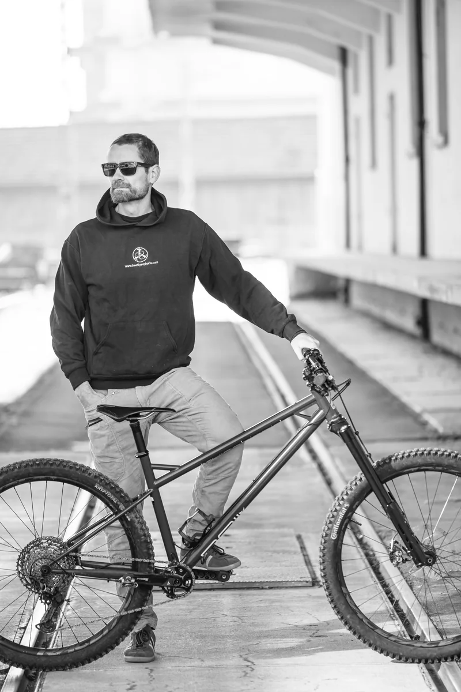

About me
The person
behind RAIL.
Samuel Kummrow
I’m Samuel, the person behind RAIL Cycles. Want to know more about my bicycles? Get in touch.
Get in touch
About me
I’m Samuel, the person behind RAIL Cycles. Want to know more about my bicycles? Get in touch.
Get in touch